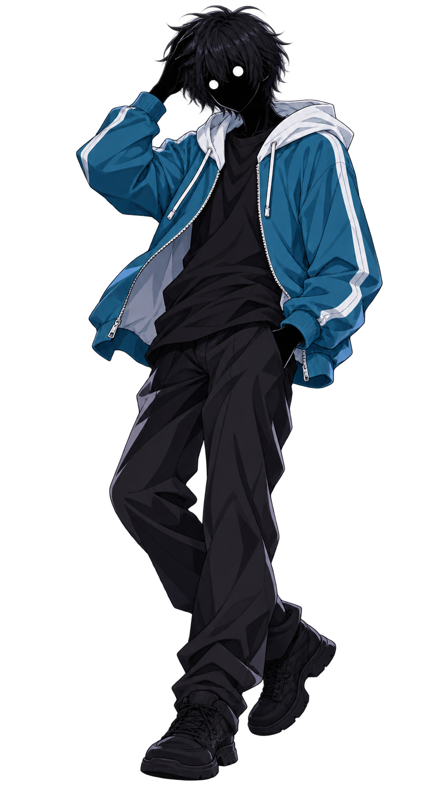

A STORY OF THE END
物語之終幕
THE END OF THE STORY
大切な物を守る為に、俺は〝終幕〟になる。
01 / PROFILE
CHARACTER PROFILE

#私は先生ではありません
天崎 恒
AMASAKI HISASHI / 偽崎・山田 太郎
02 / WORLD
WORLD ARCHIVE
※ 世界観の詳細資料は追加入力待ち。現在の説明は既存情報からの要約です。
03 / ARSENAL
ARSENAL DATABASE
04 / RELATIONS & CHRONICLE